Exención de Responsabilidad
Aviso Médico: Esta herramienta interactiva está dirigida exclusivamente a profesionales sanitarios como apoyo al diagnóstico dermatoscópico en Atención Primaria. No sustituye el juicio clínico profesional.
Primera Etapa
¿Cumple criterios de lesión melanocítica?
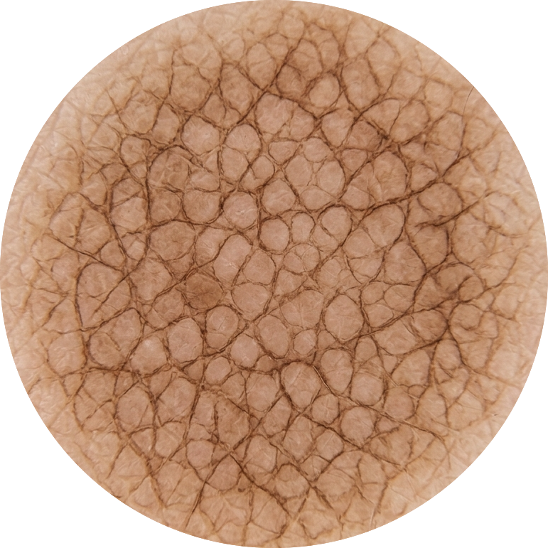
Patrón Reticular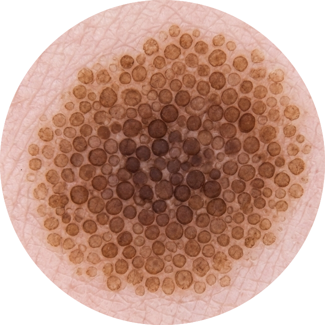
Patrón Globular Patrón Estrellado
Patrón Estrellado
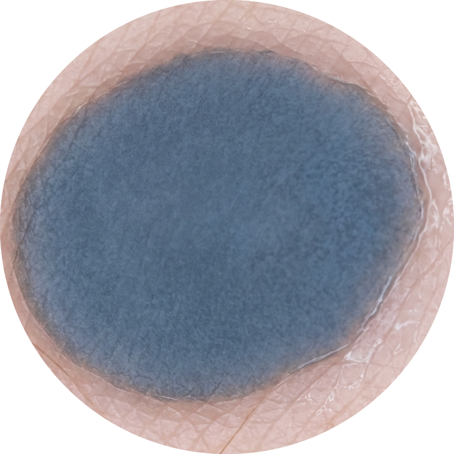
Patrón Azul Homogéneo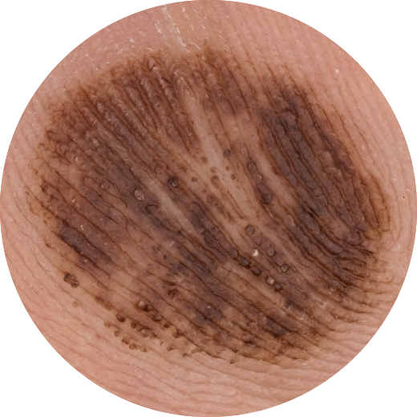
Patrón ParaleloSegunda Etapa: ¿Cumple criterios de malignidad?
Calculadora Regla ABCD
(A x 1.3) + (B x 0.1) + (C x 0.5) + (D x 0.5)
Puntuación total: 1.80
Baja sospecha (≤ 5.75)
Baja sospecha (≤ 5.75)
Cómo calcular cada punto:
- Asimetría: Línea imaginaria que divide a la lesión en 4. 1 punto si asimetría en un eje, 2 en ambos ejes.
- Bordes de la lesión: Se divide a la lesión en 8 segmentos, 1 punto por cada borde abrupto.
- Colores: Según número de colores que presente la lesión.
- Determinadas estructuras:1 punto por cada estructura: puntos, glóbulos, áreas homogéneas, retículo, extensiones.
Calculadora Método Argenziano
Seleccione los elementos presentes (Cada ítem = 1 punto):
Puntuación: 0 puntos
Sin criterios suficientes
Sin criterios suficientes
Regla de los 3 Puntos de Soyer
Seleccione los criterios presentes:
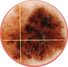
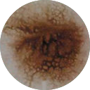
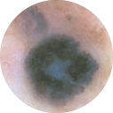
Puntuación: 0 puntos
Baja sospecha (< 2)
Baja sospecha (< 2)
Regla de Menzies
Requiere ≥ 1 Criterio Positivo y 0 Criterios Negativos.
1. Criterios Negativos (NO debe haber):
Resultado: Negativo
No cumple criterios para Melanoma
No cumple criterios para Melanoma
Lesiones No Melanocíticas
Queratosis Seborreica
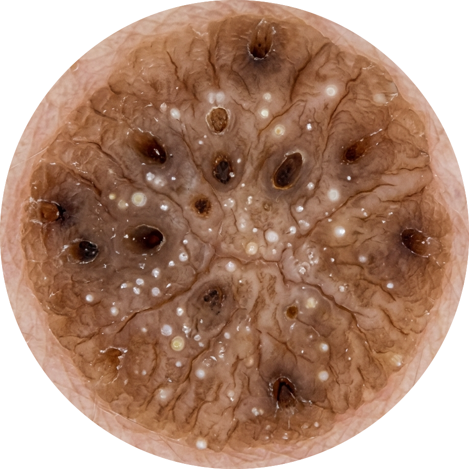
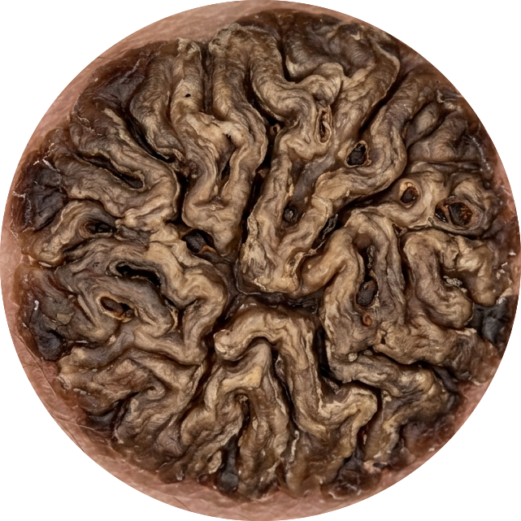
- Quistes de milium
- Tapones córneos o pseudoaperturas foliculares
- Fisuras, crestas (patrón cerebriforme)
- Pseudo-velo azul-blanquecino
- Pseudo-retículo pigmentado en regiones faciales
Dermatofibroma
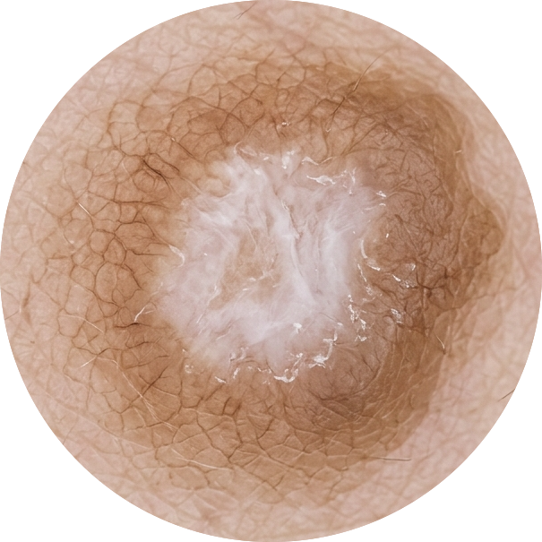
- Parche blanco central
- Retículo fino periférico
Lesiones Vasculares
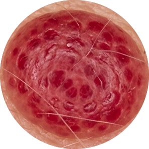
- Áreas rojo azuladas (lagunas)
Carcinoma Basocelular
Ausencia de retículo pigmentado + 1 de los siguientes:
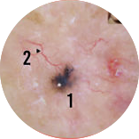
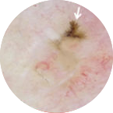
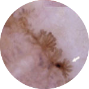
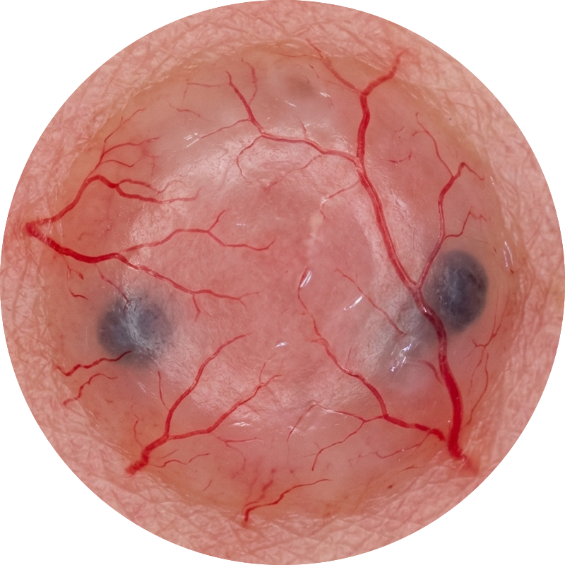
- Nidos ovoides azul-gris: Estructuras pigmentadas ovoides y alargadas.
- Teleangiectasias: Vasos rojo brillante ramificados.
- Hojas de arce: Extensiones bulbosas en la periferia.
- Ruedas de carro: Proyecciones radiales desde un eje central.
- Ulceración: Pérdida total de la epidermis.